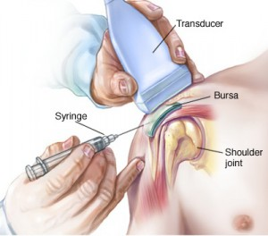
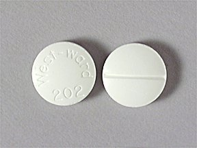
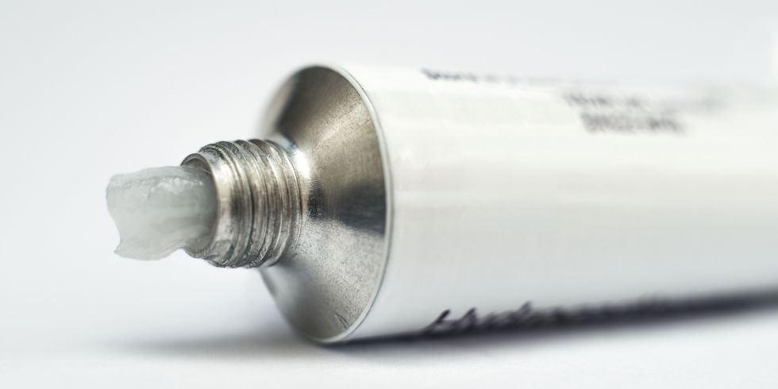

Welcome to our blog of Cortisone
  
Corticosteroid medications come in a range of strengths and in different forms, such as pills, topical creams, and liquids that can be injected directly into the body. Below are examples of cortisone medications and how they are used to treat arthritic conditions.
Cortisone Injections
Isolated joint inflammation and pain caused by bursitis, osteoarthritis, gout, and other arthritic conditions may be treated with a cortisone injection. An injection delivers potent medicine directly to the area of inflammation. Two examples of injectable cortisone are triamcinolone and betamethasone, each of which is sold under different brand names. Oral Cortisone Medications People who have inflammatory disorders that affect entire body, such as rheumatoid arthritis and ankylosing spondylitis, may treat painful flare-ups with oral corticosteroids, including sulfasalazine and methotrexate. Chronic oral steroid use can lead to complications, so doctors limit patient use when possible.
Topical Cortisone
Topical steroid medications come in many forms, such as creams, gels, foams, sprays and patches, and are used to treat skin inflammation. Many people are familiar with over-the-counter hydrocortisone cream (e.g. Hydrocone-10) to treat bug bites and poison ivy. More powerful topical corticosteroids may be prescribed to treat conditions such as psoriasis, an inflammatory skin disorder associated with psoriatic arthrirhis.